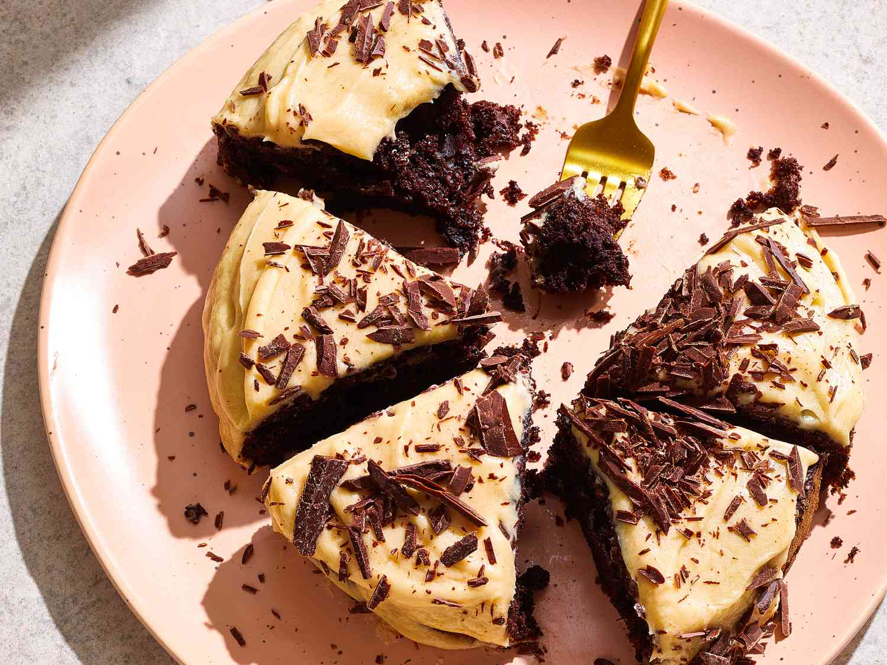

Red Velvet Cupcakes with Cream Cheese Frosting

Description
Indulge in the heavenly delight of homemade red velvet cupcakes,
a timeless classic that perfectly combines moise,
velvety texture with a rich cocoa flavor. Whether for a special occasion
or just as a delightful treat, these red velvet cupcakes are sure to leave
your taste buds craving for more!
Ingredients
- Cooking Spray
- 1/4 cup flour
- 3 tablespoons unsweetned dutch process cocoa powder
- 1/2 teaspoon baking soda
- 1/4 teaspoon baking soda
- 1/4 teaspoon salt
- 3 tablespoons low-fat buttermilk
- 3 tablespoons unsweetned applesauce
- 4 1/2 teaspoons canola oil
- 1 teaspoon instant espresso coffee powder
- 1/2 teaspoon vanilla extract
- 1 large Egg
- 1/2 cu sugar
- 1 ounce dark chocolate, chopped
- 5 tablespoons butter
- 2 tablespoons honey
- 3/4 powdered sugar
- 2 teaspoons water
Steps
- Preheat air fryer to 320 degrees F
- Stir together 1/4 cup flour, the cocoa, baking powder, baking soda, and salt in a small bowl.
- In a third bowl, beat egg with an electric mixer at low speed.
- Alternately fold flour mixture and buttermilk mixture into egg mixture with a rubber spatula, stirring until incorporated before adding next addition.
- Pour batter into the prepared pan. Arrange pan in the air fryer basket.
- Cook until a toothpick inserted in center comes out clean,